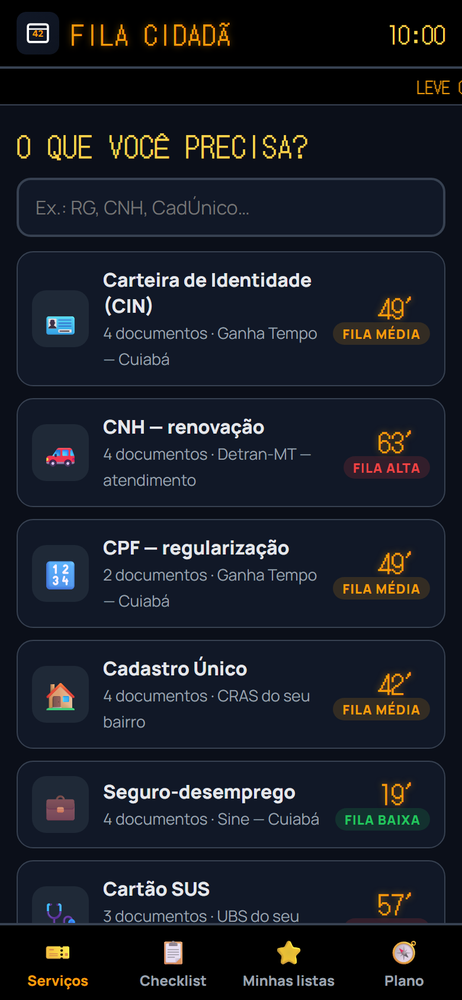
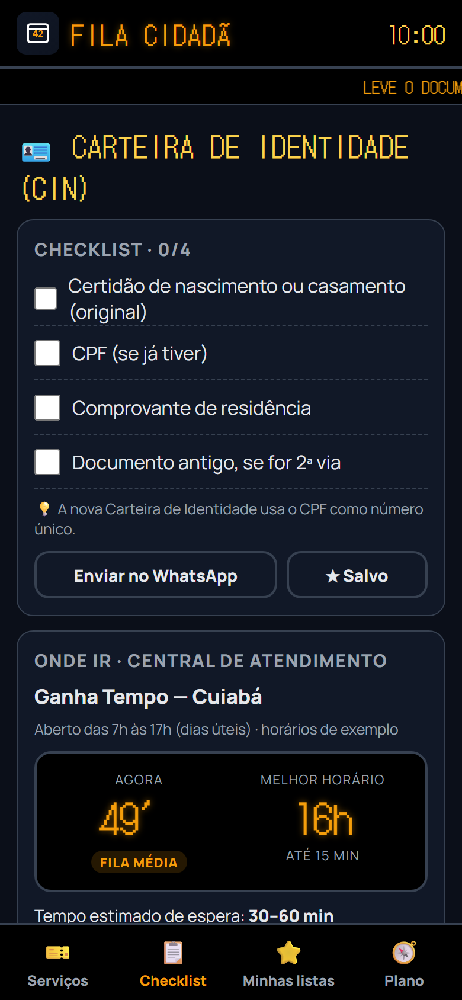
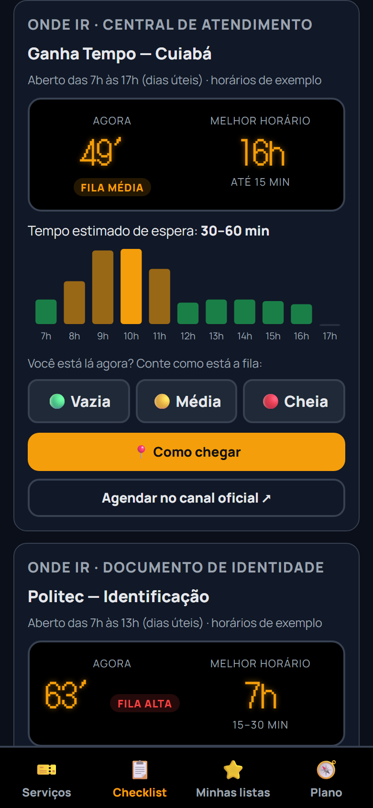

Informação prévia sobre documentos, fila e local de atendimento para o cidadão não perder a viagem — sem instalar aplicativo.
Grupo 2Fila CidadãProf. Renato
Amanda Bento Brandão · Stefany Rosa Araujo Correia · Steffany Natilin Campos Mendes · Kemylly Monique da Silva Prado
A pergunta que move o projeto
Quantas manhãs de trabalho cabem em uma viagem perdida?
O cidadão descobre no balcão que faltava um papel. O Estado já sabia da exigência antes.
O Fila Cidadã não substitui o órgão: ele prepara a pessoa antes do deslocamento.
O problema não é opinião
A burocracia cobra o tempo de quem tem menos tempo.
67%dos brasileiros já perderam um dia de trabalho para resolver documentosInstituto Locomotiva + Unico, 2022
85%apontam órgãos públicos e cartórios como os campeões de burocraciaInstituto Locomotiva + Unico, 2022
3,04 mide requerimentos aguardando análise no INSS em dezembro de 2025Valor, 2026
94 → 11minutos de espera média no Detran-DF após agendamento digitalMirante News, 2026
Quando o cidadão sabe o que levar e marca o melhor horário, a fila diminui — para ele e para o órgão.
Quem sente primeiro
Três histórias, o mesmo balcão.
L
Dona Lourdes, 63
Aposentada, Cuiabá
Precisa resolver o INSS, mas tem medo de app e depende do ônibus para chegar ao centro.
Dor: viaja sem saber se será atendida.
C
Carlos, 32
Motoboy, Várzea Grande
Perde o dia de trabalho quando precisa renovar a CNH e ainda descobre que faltou um documento.
Dor: cada viagem perdida é renda que não volta.
A
Ana, 22
Primeira CNH
Não sabe quais documentos levar, em qual unidade ir e quanto tempo vai esperar.
Dor: informação espalhada e linguagem difícil.
A proposta em uma tela
De tentativa e erro para informação antes da viagem.
Hoje
Informação espalhada em sites, telefones e folders
Não se sabe se há fila nem quanto tempo esperar
O documento que faltava só aparece no balcão
Volta outro dia, perde outra manhã
→
Com o Fila Cidadã
Checklist do serviço, com o que levar
Espera estimada e melhor horário
Unidade certa, com endereço e canal oficial
Funciona no WhatsApp e na web, sem instalar
Como funciona
Três passos antes de sair de casa.
1
Escolha o serviço
O cidadão busca “RG”, “CNH”, “CadÚnico” e vê o que o serviço exige.
2
Veja documentos e espera
Checklist, unidade, horário e tempo estimado de fila.
3
Relate a fila
Quem está no local diz se está vazia, média ou cheia e ajusta a estimativa.



O que a pesquisa de campo disse
Utilidade altíssima — mas a dor ainda é pouco frequente nesta amostra.
4,67utilidade de saber a lista de documentos antes de ir (Q16)n = 12 · escala 1–5
4,58utilidade do tempo estimado de fila e do agendamento (Q15 e Q17)n = 12 · escala 1–5
1,83frequência com que precisam ir a um órgão público (Q1)n = 12 · escala 1–5
1,75frequência com que saem sem resolver o que foram fazer (Q5)n = 12 · escala 1–5
Hipótese parcialmente sustentada. A solução é desejada, mas o público abordado vai pouco ao órgão. O alvo certo é quem realmente enfrenta a fila — e o ganho maior é evitar a viagem perdida.
Planejamento estratégico
Missão, visão e valores.
Missão
Devolver tempo ao cidadão: dizer o que levar, onde ir e quanto esperar antes de sair de casa, reduzindo viagens perdidas e o ônus de lidar com a burocracia.
Visão
Ser a camada de informação prévia do atendimento público em Mato Grosso até 2027, alimentada pelos órgãos e por quem está na fila.